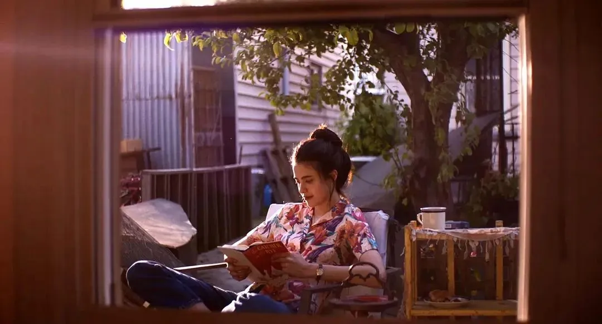
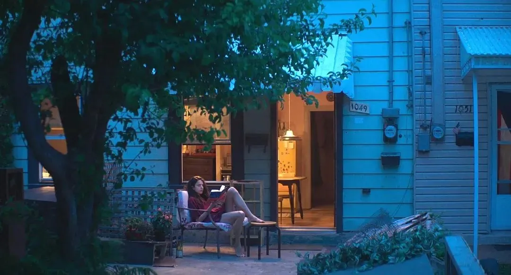
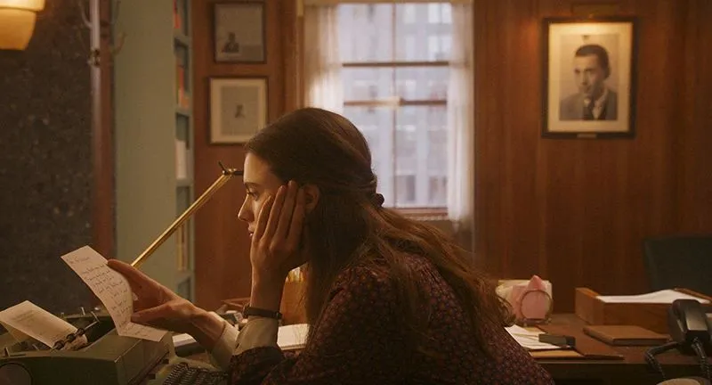

今天早上，看到朋友分享了一则视频 ↑ ，30岁的周彤回忆并对话了26岁时给自己打的一通电话。令我略有触动。
于是，我对过去几年的年终总结进行了一番回溯，试图对比一下30岁和26岁的生活，看看自己现在能否回答当初提的问题，解决曾经的疑惑。
相关文章
- 2019，26岁年终总结《新生活，是你将前往的荒野》
- 2020，27岁年终总结《在一块碎片上固定自己》
- 2021，28岁年终总结《2021读完60本书后，我在想些什么》
- 2022，29岁年终总结《2022我在思考些什么》
26岁的我，还在运营读书会的最后一年，也在构建自己的事业观，定下了重大转变的三年目标，但对更长远的未来还无限迷茫，觉得新生活就是未知的荒野。
2023年，我进入了30岁。幸运的是，26岁定下的三年目标已全部达成，大部分疑惑得到了澄清，一小部分重要问题至今仍在思考。今日三问，致前往荒野的自己，作30岁总结。
30岁的你，与26岁有什么差别？
罗素在《幸福之路》里谈论不幸福的原因道：“救治之道并不在于怨叹，思念以往，而是勇敢地接受当前的局势，下决心把名义上已经丢弃了的迷信，从暧昧的隐处连根拔去。”
如果要说30岁的我与26岁的我有什么差别，那就是：
26岁的我，已经开始有了一些性别意识与阶级意识，名义上知道自由与独立的重要性，但是仍然还没有抛弃旧伦理思想，因此在恋爱、婚育、职业发展等相关问题上，常有矛盾感与痛苦感。大部分的时候觉得要靠自己的努力实现经济与思想独立；但有时候又会觉得似乎结婚生娃，做辅助性角色，符合传统分工是更轻松的。当然这里的“轻松”是很片面的。总结而言就是，这时候的自己不够强大，没有多少胆量和勇气，会经常怀疑自己。
到了30岁，虽然也谈不上强大，但至少已经不再有过去那种纠结，不再问很多问题，已经连根拔去了暧昧之处的旧迷信，基本清除了5年前的疑惑。
这让人感到畅快。
20多岁的前几年，我是一个很差劲的人。把内心的不如意，伪装成对生活琐碎和境遇的挑剔与不满，充满对现状的抱怨。渴望被认同，不断结识异性，仿佛从种种殷勤中就能够获得自身的价值与满足。不知道所谓的“毒舌”和“直白”并非个性的彰显，常常在无形之中伤害了他人，让人们远离自己。也正因为缺乏思考的能力与智识，并未认识到种种问题，常常沉溺于自我的虚妄，而脱离不了空虚。
20多岁的后几年，我重新长大了一遍，向内向外，进行了旷日已久的自我教育。
向内观自己的成长，过去五年大概有这样一个模糊的路径：
- 了解社会：风险社会与资本主义>>消费主义与景观社会>>城镇化过程与家庭变迁
- 审视个体：婚恋分工与女性主义>>职业发展与文凭通胀>>爱与实践
阅读，让我对自己的行为与心理，以及许多社会奇观加深理解，也对自己的行为反思良多。我逐渐减少了一些不经思考的观念，少了一些偏激与焦躁，审视自己的欲望与需求，重塑了生活方式，也构建起了相对健康的亲密关系。
向外观身边的人事，大概有一个经历景深显形的过程。
大约一半的同学朋友结了婚，其中一部分生了孩子，再其中一小部分离了婚，也有几位生育了的朋友出现生育的意外，顽强生活着；大部分人努力工作着，一小部分不必那么操劳。一小部分留在国外，大部分生活在国内，其中大概有一半在家乡。这些都成为了生活图像中逐渐虚化的背景。
保有高频联络的朋友逐渐沉淀为少数几个，这已足够。与家人的联系变得频繁，张力有所松弛，但仍然试图保持不伤害自己的安全距离。
此外，身边的人和事，也让我明白了——意外尚未发生时，总以为是意外，其实是与我有关的寻常。因此，我愈发正视自己的侥幸与不幸。
30岁的当下，你过得怎么样？
一般地勤奋，普通地如愿以偿
26岁的时候，我就决定了要继续读书，最好是考个研究生，只是那时候还没确定具体的专业方向。2023年终于达成这个愿望，实现了一个新开始——来中科大读MBA。我明白它不是MBA里最好的选择，但对当下我的能力来说，是适合的。因此，还是珍惜这次机会，希望从中收获更多体系化的知识和新的朋友。
随之而来的是，考研后我总想给自己的螺丝松一松。所以2023就没有严格要求自己早起或健身什么的，基本上属于按照工作和上课的时间表走，不格外给自己安排日程任务的状态。
相关文章

流动着生活，去相对自由的城市
26岁的时候，我想在杭州定居。而2023年，我从生活了两年多的杭州，搬到上海。刚到上海的五六月，周末逛了不少书店，比如光的空间、MOHO茑屋、上生新所茑屋、读者、笃合书局、徐家汇书院等，还独自去了不少地方，这些都让我感觉不错：真应该早点搬到上海啊。
上海让我感受到，更大范围的相对自由。如今我认为，“哪里有自由，哪里就是家乡”，所谓的国家、籍贯，都是社会建构的产物，不必用这种标签束缚自己。先去横向体验世界，找到自己的信条与热爱的领域，然后纵深挖掘下去吧——这样的生活，更让我青睐。
相关文章

吃饭一样阅读，书写日常的奇观
26岁的时候，我已经开始大量阅读并尝试写点什么。2023年我依然进行着专题式的阅读与思考探索，这期间记录了对于“工作意义”和“亲密关系”等相关探讨。
看太多社科的书，会让内心充满痛彻或低落。所以我也开始看一些小说，虚构的或非虚构的。其实自己也想学习一下非虚构写作，过去总未付诸实践。行动力不足的底层原因大概是缺乏自信心，怕自己尝试了也没什么好的表现。哎！还是得克服克服！
2023年末和2024农历春节期间，我浅浅尝试了2篇 Life Writing ——《30岁，我独自来到上海生活》和《回乡过年，30岁未婚长女的一场精神战役》，有些意外的积极反馈，有被激励到，觉得自己可以试着多写点。
相关文章
- 年度书籍推荐：《2023读的几本书和碎碎念》
- 亲密关系探讨：《共同生活的可能性》

你想过10年后的自己是什么样子吗？
2023年7月初的周末，在徐汇滨江的草地上吹风，朱弟问我：“你想过10年后的自己是什么样子吗？”那时我没有很明确的答案。
碰巧的是，次日在书店看到了《四十而惑：新世代女性的中年危机》。我想着也许可以看看现在的四十岁女性都有些什么困惑，大致地预想一下自己期望什么样的四十岁，所以快速地翻阅了这本书。但可惜，也就下面这段话让我有些印象深刻，此外并无新的感触。
一些心理学家正在研究用某些方式讲述个人故事与传承之间的联系。丹·麦克亚当斯（Dan McAdams）教授研究人们如何 讲述自己的生活。“高生成性”的成年人剧本通常要有转折点，即“赎回序列”——消极的经历以某种方式变得有意义。在生活中发现“赎回序列”的中年人有更强的整体幸福感。
30岁是成年的青春期，等到了50岁，就会重新开始，迎来第二次机会。
现在想来，观看别人的人生，对自己的帮助确实是有限的，还是要靠自己去醒悟。
26岁的年终总结里写下了自己对信仰与终极目标的迷茫。如今这两者我已经找到，只是还不确定能否达成、何时达成。当然，这应该是个难以量化的过程。所以30多岁对我来说，还是一个充满可能性的时期，正如5年前觉得新生活就是未知的荒野一样。
未知与可能性，也意味着压力。我好像一直在带着压力重新出发，前往荒野，目前仍然没有陷入完全的虚无与绝望。我想，就算没能找到信仰和终极目标 并为之努力，也能在一个相对体面的水平线上，预期到一些结果不会太差的未来，就已经是我这种普通人的幸运了。
总把目光放在未来，忽视了此刻的生活——这种惯性也是我所警惕的。我希望把30多岁的生活过好，有思考、有体悟、有实感、有创作。因此对于40岁即使还没有一个明确图景得以描述，也不做过多幻想，能明确这几条不想要的生活模式就很好：
- 不想要被Program的人生
- 不想要丧失“知”的自由
“中年女性有足够的洞察力，能够看清哪些重要，哪些不重要”。我觉得自己的这种洞察力正在增强。我将带着压力和26岁时的勇气，逐步远离那些不想要的生活模式，步入新一片荒野。
如果说30岁的自己是清醒而自由的，那么就希望40岁的自己是强壮而美丽的吧。
让一切都降临在我身上吧
甚至是空白时刻里对自己的不理解
因为我实现自己就够了
没有什么能阻挡我的道路
直到无畏的死亡
——挣扎也好，停歇也罢
我将永远站起
强壮而美丽
宛如一匹新生的马《濒临狂野的心》克拉丽丝·李斯佩克朵｜孙山 译